[전자 릴레이 회로]
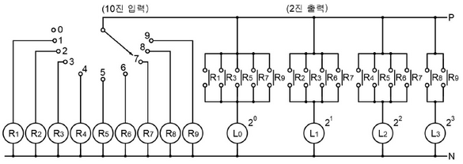
[다이오드 매트릭스]
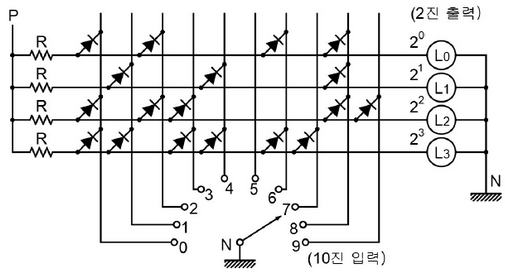
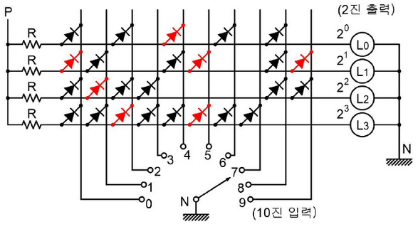
| 점수 | 세부기준 |
|---|---|
| 8점 | 전체가 맞으면 8점 |
| 2점 | \(L_0, L_1, L_2, L_3\) 각각 1개당 2점씩 |
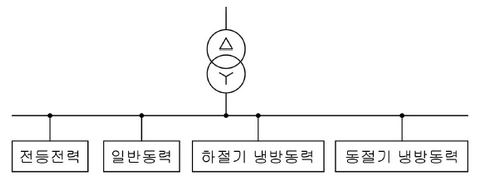
| 부하명 | 전등부하 | 일반동력 | 하절기 냉방동력 | 동절기 냉방동력 |
|---|---|---|---|---|
| 설비용량 | 120[kW] | 230[kW] | 130[kW] | 70[kW] |
| 수용률 | 70[%] | 60[%] | 70[%] | 65[%] |
• 계산과정
답
계산과정:
전등전력부하 = 120 = 84 [kW]
일반동력부하 = 230 = 138 [kW]
하절기 냉방동력부하 = 130 = 91 [kW]
동절기 난방동력부하 = 70 = 45.5 [kW]
따라서, 변압기 용량 = = 339.909 [kVA]
답: 400[kVA] 선정
| 점수 | 세부기준 |
|---|---|
| 5점 | 계산과정과 정답이 모두 맞으면 5점 획득 |
| 0점 | 계산과정과 정답에 오류가 있으면 0점 |
()
KEC 341.7 아크를 발생하는 기구의 시설
고압용 또는 특고압용의 개폐기·차단기·피뢰기 기타 이와 유사한 기구(이하 이 조에서 “기구 등”이라 한다)로서 동작 시에 아크가 생기는 것은 목재의 벽 또는 천장 기타의 가연성 물체로부터 표 341.7-1에서 정한 값 이상 이격하여 시설하여야 한다.
| 기구 등의 구분 | 이격거리 |
|---|---|
| 고압용의 것 | 1[m] 이상 |
| 특고압용의 것 | 2[m] 이상 (사용전압이 35[kV] 이하의 특고압용의 기구 등으로서 동작할 때에 생기는 아크의 방향과 길이를 화재가 발생할 우려가 없도록 제한하는 경우에는 1[m] 이상) |
| 점수 | 세부기준 |
|---|---|
| 3점 | 정답이 맞으면 3점 획득 |
발전기에 과전류나 과전압이 생긴 경우
용량이 (①) [kVA] 이상의 발전기를 구동하는 수차의 압유 장치의 유압 또는 전동기의 가이드 밴 제어장치, 전동식 니이들 제어장치 또는 전동식 디플렉터 제어장치의 전원 전압이 현저히 저하한 경우
용량이 (②) [kVA] 이상의 발전기를 구동하는 풍차의 압유 장치의 유압, 압축 공기장치의 공기압 또는 전동식 브레이드 제어장치의 전원 전압이 현저히 저하한 경우
용량이 (③) [kVA] 이상인 수차 발전기의 스러스트 베어링의 온도가 현저히 상승한 경우
용량이 (④) [kVA] 이상인 발전기의 내부에 고장이 생긴 경우
정격출력이 (⑤) [kW]를 초과하는 증기터빈은 그 스러스트 베어링이 현저하게 마모되거나 그의 온도가 현저히 상승한 경우
| ① | ② | ③ | ④ | ⑤ |
|---|---|---|---|---|
(표에 )
| ① | ② | ③ | ④ | ⑤ |
|---|---|---|---|---|
| 500 | 100 | 2,000 | 10,000 | 10,000 |
가. 발전기에 과전류나 과전압이 생긴 경우
나. 용량이 500 [kVA] 이상의 발전기를 구동하는 수차의 압유 장치의 유압 또는 전동식 가이드밴 제어장치, 전동식 니이들 제어장치 또는 전동식 디플렉터 제어장치의 전원전압이 현저히 저하한 경우
다. 용량이 100 [kVA] 이상의 발전기를 구동하는 풍차(風車)의 압유장치의 유압, 압축 공기장치의 공기압 또는 전동식 브레이드 제어장치의 전원전압이 현저히 저하한 경우
라. 용량이 2,000 [kVA] 이상인 수차 발전기의 스러스트 베어링의 온도가 현저히 상승한 경우
마. 용량이 10,000 [kVA] 이상인 발전기의 내부에 고장이 생긴 경우
바. 정격출력이 10,000 [kW]를 초과하는 증기터빈은 그 스러스트 베어링이 현저하게 마모되거나 그의 온도가 현저히 상승한 경우
| 점수 | 세부기준 |
|---|---|
| 5점 | 소문항 총 5개가 모두 정답이면 5점 획득 |
| 1점 | 소문항 총 5개 중 1개당 1점씩 획득 |
| 공칭전압 | 최대전압[V] | 절연내력 시험전압[V] |
|---|---|---|
| 6600 | 6900 (비접지) | ① |
| 13200 | 13800 (중성점 다중접지) | ② |
| 22900 | 24000 (중성점 다중접지) | ③ |
| 공칭전압 | 최대전압 [V] | 절연내력 시험전압 [V] |
|---|---|---|
| 6600 | 6900 (비접지) | ① 10350 |
| 13200 | 13800 (중성점 다중접지) | ② 12696 |
| 22900 | 24000 (중성점 다중접지) | ③ 22080 |
① 6900 \(\times\) 1.5 = 10350 [V]
② 13800 \(\times\) 0.92 = 12696 [V]
③ 24000 \(\times\) 0.92 = 22080 [V]
| 점수 | 세부기준 |
|---|---|
| 6점 | 소문항 총 3개의 정답이 모두 맞으면 6점 획득 |
| 2점 | 소문항 총 3개 중 정답 1개당 2점씩 획득 |
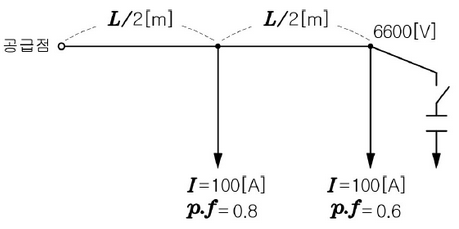
(1) 공급점에서의 역률을 0.9(지상)로 개선하기 위해 필요한 콘덴서의 용량 \(Q_c\)[kVA]를 구하시오.
계산과정
답
(2) 선로의 전력손실이 최소 되기 위한 콘덴서의 용량 \(Q_c\)[kVA]를 구하시오. (단, 말단의 전압은 6600[V]로 일정하고, 저항은 r[Ω/m]이다.)
계산과정
답
\[ P_{중간} = \sqrt{3} \times 6600 \times 100 \times 0.8 \times 10^{-3} = 914.522 \text{ [kW]} \]
\[ Q_{중간} = 914.522 \times \left( \frac{4}{3} \times \frac{\sqrt{1 - 0.9^2}}{0.9} \right) = 242.968 \text{ [kVA]} \]
\[ P_{말단} = \sqrt{3} \times 6600 \times 100 \times 0.6 \times 10^{-3} = 685.892 \text{ [kW]} \]
\[ Q_{말단} = 685.892 \times \left( \frac{4}{3} \times \frac{\sqrt{1 - 0.9^2}}{0.9} \right) = 582.330 \text{ [kVA]} \]
\[ Q*c = Q*{중간} + Q_{말단} = 242.968 + 582.330 = 825.298 \approx 825.30 \text{ [kVA]} \]
\[ P*1 = 3I_1^2R + 3I_2^2R = 3 \left( \frac{L}{2} \times r \right) \left( I*{1}^2 + I_{2}^2 \right) \]
\[ = 3 \left( \frac{L}{2} \times r \right) \left\{ \left( \sqrt{(80+60)^2 + (60+80-I_L)^2} \right)^2 + \left( \sqrt{(60)^2 + (80-I_L)^2} \right)^2 \right\} \]
공급전류와 말단 전류의 값이 최소가 되도록
\(2I_L^2 - 440I_L + (140^2 + 80^2)\)의 미분이 0이 되는 값을 구하여
최소 전류 \(I_L\)의 값을 구하면 \(I_L = 110 \text{ [A]}\)
\[ Q_{c, 최소손실} = \sqrt{3} \times 6600 \times 110 \times 10^{-3} = 1257.468 \approx 1257.47 \text{ [kVA]} \]
| 점수 | 세부기준 |
|---|---|
| 6점 | 소문항 2개의 계산과정과 정답이 모두 맞으면 6점 획득 |
| 3점 | 소문항의 계산과정과 정답이 모두 맞는 1개당 3점씩 획득 |
감리원은 설계도서 등에 대하여 공사계약문서 상호 간의 모순되는 사항, 현장 실정과의 부합여부 등 현장 시공을 주안으로 하여 해당 공사 시작 전에 검토하여야 하며 검토내용에는 다음 각 호의 사항 등이 포함되어야 한다.
| ① | ② | ③ | ④ | ⑤ |
|---|---|---|---|---|
[해설] 단순 암기형 / 난이도 下 (기출)
| ① | ② | ③ | ④ | ⑤ |
|---|---|---|---|---|
| 실제 가능 | 설계도면 | 산출내역서 | 설계도서의 누락 | 물량 내역서 |
| 점수 | 세부기준 |
|---|---|
| 5점 | 소문항 총 5개의 정답이 모두 맞으면 5점 획득 |
| 1점 | 소문항 총 5개 중 정답 1개당 1점씩 획득 |
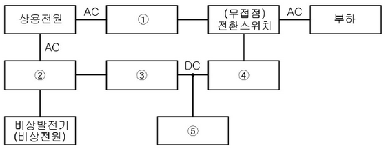
| 번호 | 명칭 |
|---|---|
| ① | |
| ② | |
| ③ | |
| ④ | |
| ⑤ |
| ① | ② | ③ | ④ | ⑤ |
|---|---|---|---|---|
| 자동전압조정기 (AVR) | 전환스위치 (절체용 개폐기) | 정류기 (컨버터) | 인버터 | 축전지 |
| 점수 | 세부기준 |
|---|---|
| 5점 | 소문항 총 5개의 정답이 모두 맞으면 5점 획득 |
| 1점 | 소문항 총 5개 중 정답 1개당 1점씩 획득 |
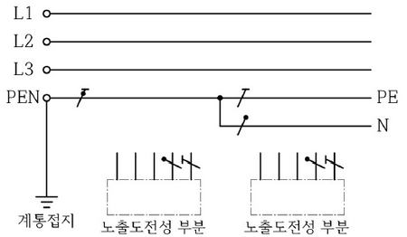
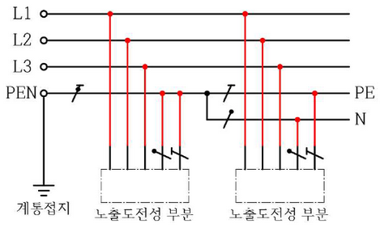
| 점수 | 세부기준 |
|---|---|
| 4점 | 도면 작도가 정답과 모두 맞으면 4점 획득 |
| 0점 | 도면 작도에 오류가 있으면 0점 |
지중 전선로는 전선에 케이블을 사용하고 또한 ( ① )·암거식(暗渠式) 또는 ( ② )에 의하여 시설하여야 한다.
지중 전선로를 ( ① ) 또는 암거식에 의하여 시설하는 경우에는 다음에 따라야 한다.
가. ( ① )에 의하여 시설하는 경우에는 매설 깊이를 ( ③ )[m] 이상으로 하되, 매설 깊이가 충분하지 못한 장소에는 견고하고 차량 기타 중량물의 압력에 견디는 것을 사용할 것. 다만 중량물의 압력을 받을 우려가 없는 곳은 0.6[m] 이상으로 한다.
| ① | ② | ③ |
|---|---|---|
[해설] 단답 암기형 / 난이도 下 (신출)
| ① | ② | ③ |
|---|---|---|
| 관로식 | 직접매설식 | 1 |
| 점수 | 세부기준 |
|---|---|
| 6점 | 소문항 총 3개의 정답이 모두 맞으면 6점 획득 |
| 2점 | 소문항 총 3개 중 정답 1개 당 2점 획득 |
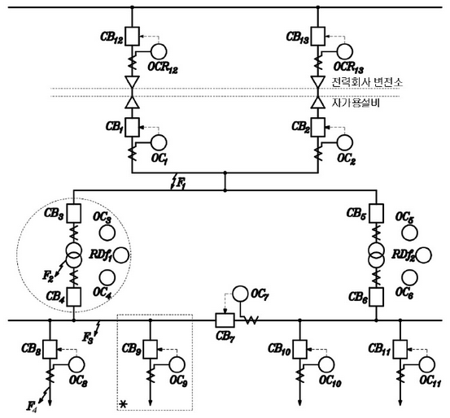
(1) 사고점이 \(F_1, F_2, F_3, F_4\)라고 할 때, 주 보호와 후비 보호에 대한 다음 표의 빈칸을 채우시오.
| 사고점 | 주 보호 | 후비 보호 |
|---|---|---|
| \(F_1\) | \(OC_1\) + \(CB_1\) And \(OC_2\) + \(CB_2\) | \(OC_1\) + \(CB_1\) And \(OC_2\) + \(CB_2\) |
| \(F_2\) | \(OC_3\) + \(CB_3\) And \(OC_4\) + \(CB_4\) | \(OC_3\) + \(CB_3\) And \(OC_6\) + \(CB_6\) |
| \(F_3\) | \(OC_4\) + \(CB_4\) And \(OC_7\) + \(CB_7\) | \(OC_4\) + \(CB_4\) And \(OC_7\) + \(CB_7\) |
| \(F_4\) | \(OC_5\) + \(CB_5\) | \(OC_8\) + \(CB_8\) |
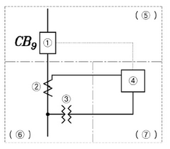
| 부분 | 명칭 |
|---|---|
| ① | |
| ② | |
| ③ | |
| ④ | |
| ⑤ | |
| ⑥ | |
| ⑦ |
(3) 답란의 그림 \(F_2\)사고와 관련된 검출부, 판정부, 동작부의 도면을 완성하시오. 단, 질문 “(2)”의 도면을 참고하시오.
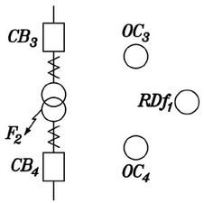
| ① | ② |
|---|---|
| \(OC*{12} + CB*{12} And OC*{13} + CB*{13}\) | \(RDf_1 + OC_4 + CB_4 And OC_3 + CB_3\) |
| ① | ② | ③ | ④ | ⑤ | ⑥ | ⑦ |
|---|---|---|---|---|---|---|
| 교류 차단기 | 변류기 | 계기용 변압기 | 과전류 계전기 | 동작부 | 검출부 | 판정부 |
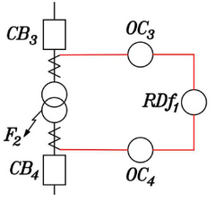
(부분점수)
| 점수 | 세부기준 |
|---|---|
| 14점 | 중문항 총 3개 정답이 모두 맞으면 14점 획득 |
| 4~0점 | 중문항 (1)번의 소문항 2개 중 정답 1개 당 2점씩 획득 |
| 7~0점 | 중문항 (2)번의 소문항 7개 중 정답 1개 당 1점씩 획득 |
| 3점 | 중문항 (3)번이 정답인 경우 3점 획득 |
이 외에,
| 점수 | 세부기준 |
|---|---|
| 4점 | 소문항 총 4개의 정답이 모두 맞으면 4점 획득 |
| 1점 | 소문항 총 4개 중 정답 1개당 1점씩 획득 |
이 외에
| 점수 | 세부기준 |
|---|---|
| 6점 | 소문항 총 3개의 정답이 모두 맞으면 6점 획득 |
| 2점 | 소문항 총 3개 중 정답 1개 당 2점 획득 |
이 외에,
| 점수 | 세부기준 |
|---|---|
| 4점 | 소문항 4개가 모두 정답이면 4점 획득 |
| 1점 | 소문항 4개 중 정답 1개 당 1점 획득 |
① 수전단 전압
② 송전단 전류
① 수전단 전압
계산과정 : 송전단의 선간전압 \(V_s = AV_r + \sqrt{3}BI_r\)이고, 무부하 시 (\(I_r\) = 0)이므로, 수전단 전압 \[ V_r = \frac{V_s}{A} = \frac{154}{0.9} = 171.11 [kV] \]
정답: 171.11 [kV]
② 송전단 전류
계산과정 : 송전단 전류 \(I_s = C\frac{V_r}{\sqrt{3}} + DI_r\)이고, 무부하 시 (\(I_r\) = 0)이므로 \[ I_s = C\frac{V_r}{\sqrt{3}} = j0.5 \times 10^{-3} \times \frac{171.11 \times 10^3}{\sqrt{3}} = j49.395 [A] \]
정답: j49.4 [A]
따라서 수전단에서 필요로 하는 조상설비용량 Q는 \[ Q = \sqrt{3}V_r I_c \times 10^{-3} = \sqrt{3} \times 140 \times 10^3 \times 42.54 \times 10^{-3} = 10315.40 [kVA] \]
| 점수 | 세부기준 |
|---|---|
| 7점 | 중문항 2개의 계산과정과 정답이 모두 맞으면 7점 획득 |
| 4~2점 | 중문항 (1)의 소문항 2개 중 계산과정과 정답이 맞는 경우 1개당 2점 획득 |
| 3점 | 중문항 (2)의 계산과정과 정답이 맞으면 3점 획득 |
| 심선의 굵기 [mm²] | 16 | 25 | 35 | 50 | 60 | 95 | 120 | 150 |
|---|---|---|---|---|---|---|---|---|
| 허용 전류 [A] | 50 | 70 | 90 | 100 | 110 | 140 | 180 | 200 |
계산과정 :
정답 :
① 전압 강하율 $= [%] = 10[%] $이므로,
\[ V_R = \frac{V_S}{1 + \epsilon} = \frac{3300}{1 + 0.1} = 3000 [V] \]
② \(\epsilon = V_S - V_R = 3300 - 3000 = \sqrt{3} I R \cos\theta + X \sin\theta\)
\[ I = \frac{P}{\sqrt{3} V_R \cos\theta} = \frac{500 \times 10^3}{\sqrt{3} \times 3000 \times 0.9} = 106.92 [A] \]
조건에서 리액턴스를 무시하면 \(\epsilon = \sqrt{3} I R \cos\theta 에서 R = \frac{\epsilon}{\sqrt{3} I \cos\theta}\) 가 된다.
\[ \therefore R = \frac{300}{\sqrt{3} \times 106.92 \times 0.9} = 1.8 [\Omega] \]
③ $R = 에서 A = $이므로 \(A = \frac{1}{55} \times \frac{5800}{1.8} = 58.59 [mm^2]\)
| 점수 | 세부기준 |
|---|---|
| 6점 | 소문항 2개 정답이 모두 맞으면 6점 획득 |
| 3점 | 소문항 2개 중 정답이 1개 맞으면 3점 획득 |
| 0점 | 소문항 2개 정답이 모두 틀리면 0점 |
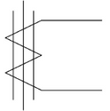
명칭 :
기능 :
| 점수 | 세부기준 |
|---|---|
| 3점 | 소문항 2개의 정답이 모두 맞으면 3점 획득 |
| 2점 | 소문항 중 기능이 정답이면 2점 획득 |
| 1점 | 소문항 중 명칭이 정답이면 1점 획득 |
| 점수 | 세부기준 |
|---|---|
| 4점 | 소문항 2개의 정답이 모두 맞으면 4점 획득 |
| 2점 | 소문항 2개 중 정답 1개 당 2점씩 획득 |